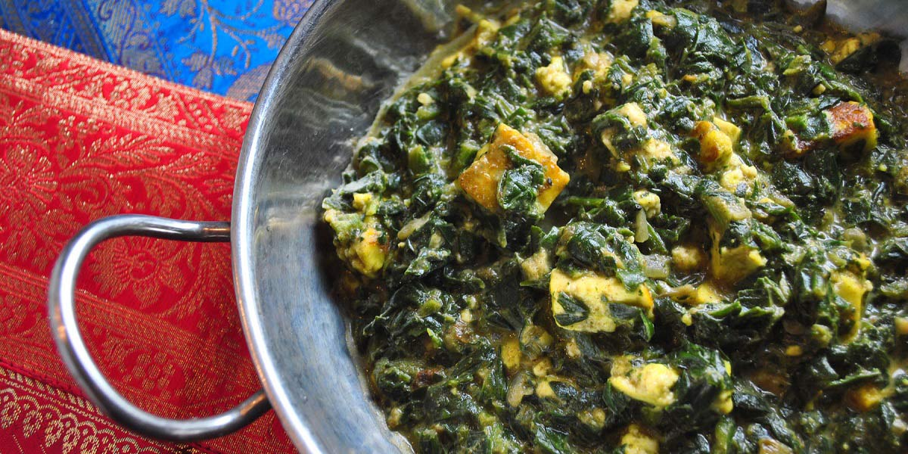

Saag Paneer
Recipe Specification
Ingredients List
| Ingredients | Quantity |
|---|---|
| Ghee | 30ml |
| Turmeric | 1 tsp |
| Chilli Powder | 1 tsp |
| Paneer | 450g |
| Baby Spinach | 500g |
| White Onion | 1x1 |
| Garlic Clove | 3 Cloves |
| Root Ginger | 1 Inch |
| Green Chilli | 1x1 |
| Garam Masala | 1 tsp |
| Salt & Pepper | To Taste |
Yield: 4-6 portions
Preparation
- Cut paneer into 1 inch cubes.
- Wash and spin dry baby spinach.
- Peel and slice white onion.
- Peel and crush garlic cloves.
- Peel and grate ginger.
- Finely slice green chillies.
- Melt ghee and mix turmeric, chilli powder and cubed paneer with it. Ensure paneer has an even coating.
- Place garlic, ginger, onion and green chilli in a food processor and blitz into a puree.
Cooking Instructions
- Place sauté pan on a medium/high heat.
- Add cubed paneer to pan and fry until all sides are golden brown.
- Remove paneer from the pan and set aside. Add onion paste to pan, season with salt and pepper before cooking until onions start to caramelise.
- Add garam masala to onions with a splash of water and cook for 2 more minutes.
- Add baby spinach to pan and cook for 3 minutes until spinach has wilted.
- Add paneer to spinach and warm through for 2 minutes before seasoning with salt and pepper.
- Serve when ready.

Serving Suggestions
Serve with bombay potatoes, naan bread or pilaf rice.
Storing instructions
Allow to cool to room temperature. Consume within 4 days of making. Store in the fridge
Reheating Instructions
Place in the microwave for 2-3 minutes.